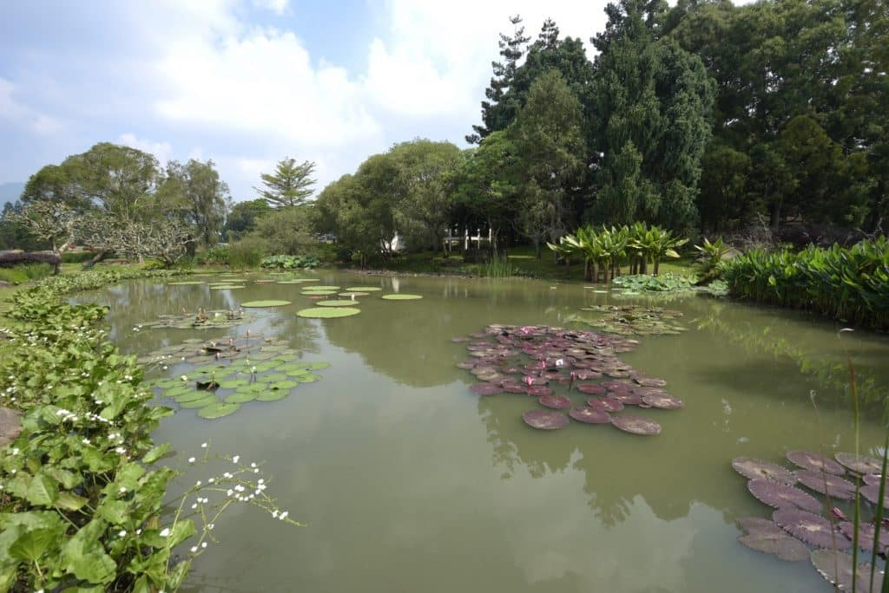
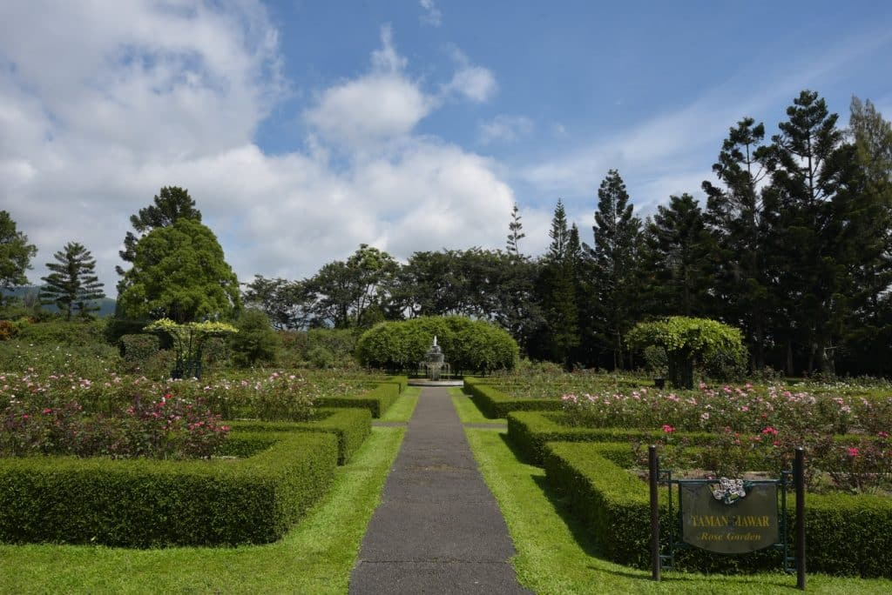
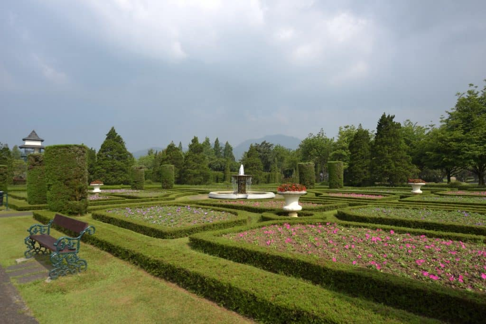

Visi & Misi
Ibu Suhardani Bustanil Arifin, pemrakarsa sekaligus Ketua Umum Yayasan Bunga Nusantara beserta anggota lainnya mulai merintis pembangunan taman ini pada tahun 1992, kemudian secara intensif pelaksanaan pembangunan tahap awal taman dimulai sejak tahun 1993. Tujuan utama pembangunan taman ini bagi Yayasan Bunga Nusantara adalah menciptakan Taman Bunga Nusantara sebagai salah satu aset wisata berbasis wisata agro nasional dengan skala internasional.
- Menyediakan fasilitas dan sarana untuk penelitian, pendidikan, dan meningkatkan kreatifitas masyarakat.
- Membantu meningkatkan pertumbuhan sektor ekonomi, pendapatan daerah dan masyarakat khususnya petani bunga.
- Melestarikan tanaman langka dan wawasan lingkungan hidup.
- Meningkatkan cinta masyarakat akan bunga sebagai sumber pendapatan dan kesejahteraan.
- Menyediakan tempat rekreasi yang sehat bagi wisatawan domestik dan mancanegara.
Geografis
Taman Bunga Nusantara terletak di ketinggian 750 meter diatas permukaan laut, dengan suhu rata-rata harian 20°-26° C dan curah hujan 2.475,7 mm.
Taman Bunga Nusantara dapat dicapai dari segala arah dengan jarak tempuh sekitar 9 km dari Jalan Raya Jakarta–Bandung.
Wisata
Taman Air

Selain menjadi kebutuhan pokok makhluk hidup, air juga merupakan sumber inspirasi bagi manusia. Percikan serta pantulan dari benda yang berada di dekatnya sungguh memberikan hal yang sangat mempesona.
Taman Mawar

Bunga mawar yang indah berasal dari belahan bumi bagian utara atau tepatnya berasal dari negara China. Pada abad pertengahan, bunga mawar biasa disebut dengan Flos Florum yang berarti bunga dari segala bunga. Bunga mawar juga ditunjuk oleh Maria ibunda Isa sebagai lambang dari kesempurnaan duniawi dan surgawi, dan bahkan sampai sekarang bunga mawar masih dianggap sebagai bunga yang paling terkenal di seluruh penjuru dunia.
Taman Perancis

Desain Taman Perancis merupakan desain masa Renaissance dengan bentuk-bentuk geometrisnya. Perdu Taiwan Beauty yang dipangkas rapi membingkai bunga warna-warni ini disebut parterre yang berasal dari frase bahasa Perancis, yaitu broderie de par terre atau “sulaman di atas tanah”. Gaya taman seperti ini mencapai puncak ketenarannya pada masa kekuasaan Kaisar Louis XIV di abad ke-17. Jenis tanaman hanyalah merupakan unsur kedua setelah penentuan bentuk/desain taman. Taman ini diciptakan untuk melambangkan penguasaan manusia terhadap alam. Keindahan Taman Perancis dapat Anda nikmati dari dekat maupun dari kejauhan. Untuk melihat bentuk-bentuk geometrisnya secara keseluruhan kami undang Anda untuk melihatnya di atas Menara Pandang.
Desainer
Taman Bunga Nusantara didesain oleh orang-orang terbaik dari seluruh dunia.
Zain Rachman
Sansan Widjaja
Darmasto Kusumaningrat
Russell Autrey